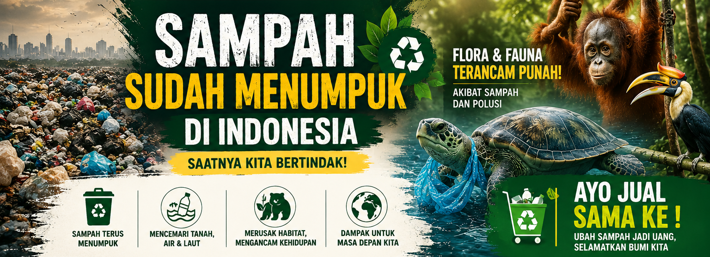
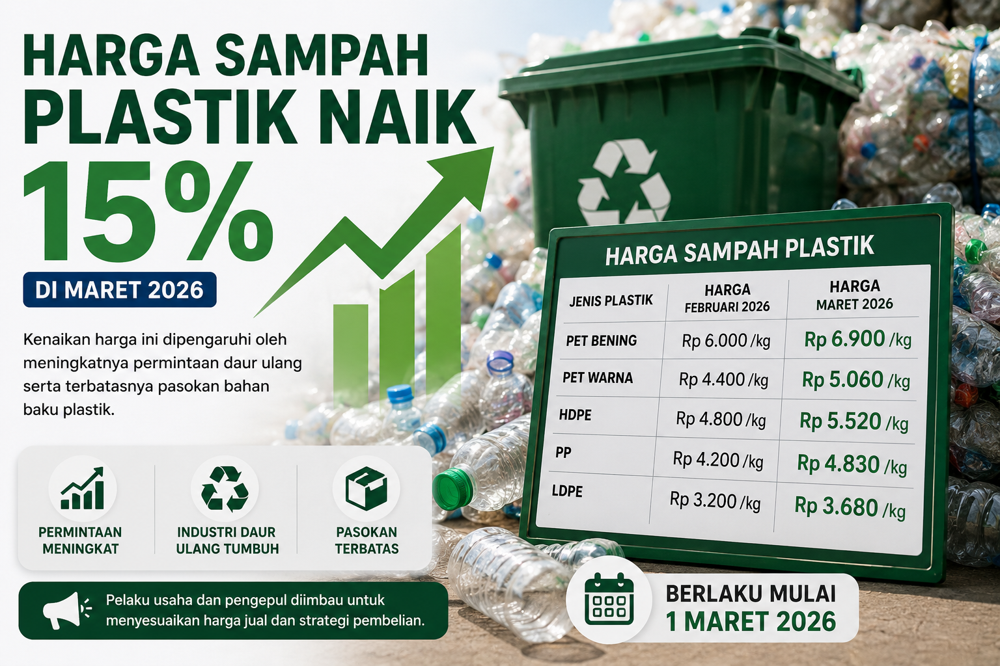

 Mengapa Daur Ulang Penting? Daur ulang membantu mengurangi sampah di TPA dan menghemat sumber daya alam. Baca Selengkapnya →
 Jenis Plastik yang Bisa Didaur Ulang Tidak semua plastik bisa didaur ulang. Kenali jenisnya di sini. Baca Selengkapnya →